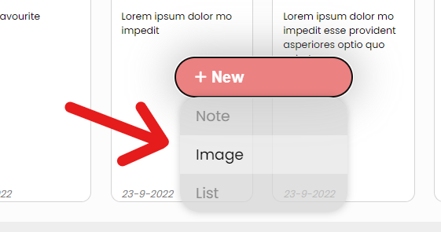
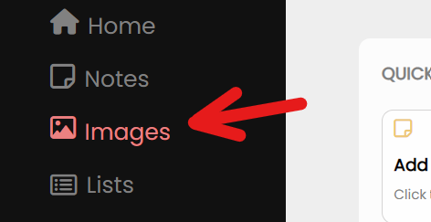
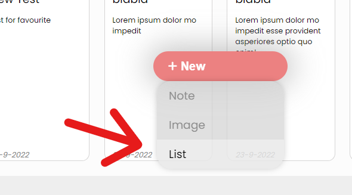
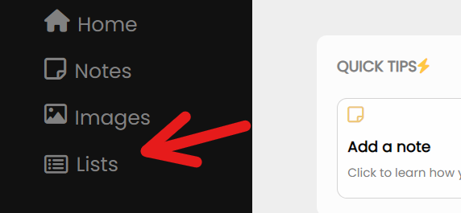

Quick Tips
Add a note
Click to learn how you can add a note
Add an image
Click to learn how you can add an image
Add a list
Click to learn how you can add a list
Notes
Add an image
To add an image, open the "Add" button and select the "Image" option. A new pop-up will open and now you can select an image from your computer.
To see your images, open the sidebar menu and select "My notes" option. You'll be redirect to a new page where you can select "Images" tab.
Mission complete! 😉
Add a list
To add a list, open the "Add" button and select the "List" option. A new pop-up will open and now you can select a list from your computer.
To see your lists, open the sidebar menu and select "Lists" option. You'll be redirect to a new page where you can select "List" tab.
Mission complete! 😉
Add a note
To add a note, open the "Add" button and select the "Note" option. A new pop-up will open and now you can select a note from your computer.
To see your notes, open the sidebar menu and select "Notes" option. You'll be redirect to a new page where you can select "Note" tab.
Mission complete! 😉